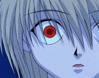

Te amo de maneras que no imaginas,
te amo tan locamente, tan desesperadamente.
Muchos diran que soy un apegado de mierda, y tienen razon,
pero me chupa un huevo, yo te amo de verdad.
Te amo, te amo porque me hiciste amar, y ser feliz de formas que jamas habia sido, te amo con todo mi corazon desde el momento que te me acercaste a hablarme, aunque yo como forro decia yo no soy Franco, pero en el fondo deseaba concerte. Me hiciste la persona mas feliz del munfo mundo. Cada que escucho tu risa me pongo feliz, cada chiste, o ocurrencia tuya me hace tan feliz, y que siempre me dediques o recomendes canciones, me hace acordar a lo que decia Gustavo Cerati "regalar musica es un acto de amor absoluto". En cada pequeña cosa que haces, que me das, logro ver que me amas, y amo cada una de esas de cosas por mas pequeña que sea. Te amo.
En esta semana de la dulzura,
aunque no tenga plata para regalarte algo,
tengo mi astucia ahre y te regalo una pagina propia,
ojala te guste ya que lo hago con el corazon.

|
Guapa, por si no te quedo claro, sos el amor de mi vida y me |
|
Aun que se que estas cansada de Bonsai, como vos misma dijiste es nuestra cancion.